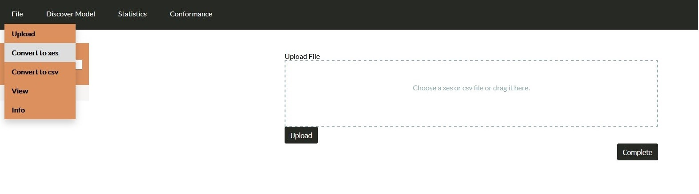
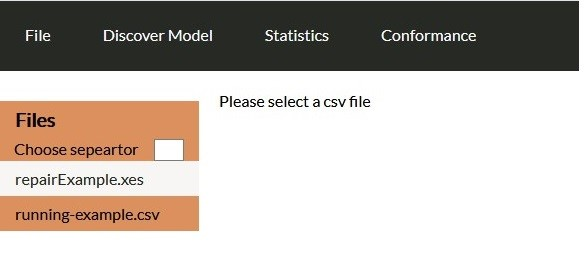
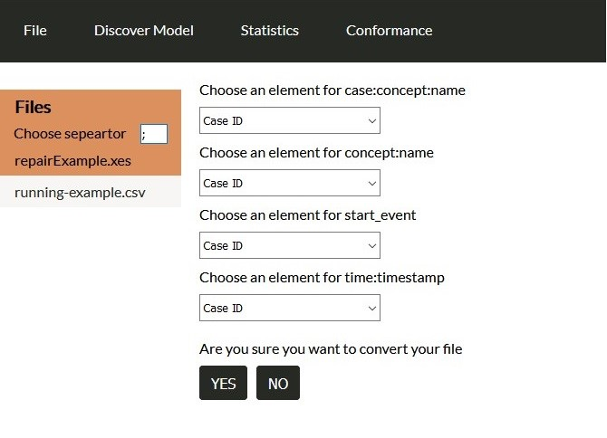
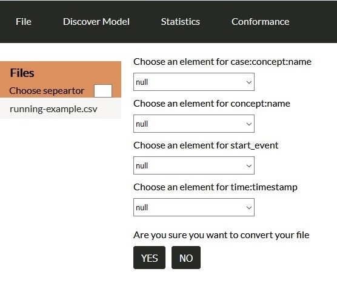
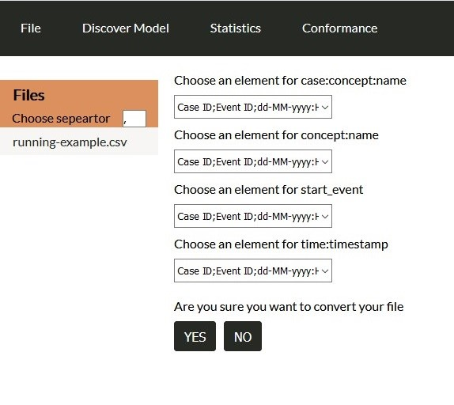
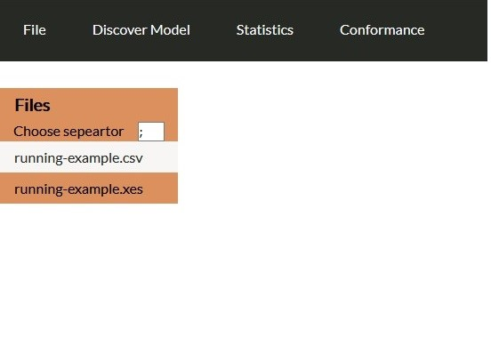

Convert to xes¶
Under the file menu there is the option upload so the user can upload more than one file.

Under file menu there are more option if the user has already uploaded at least one file. The user should select a file from the left menu and then select one of the options. If the user has not selected any file and presses an option then a blank screen will appear on the right until the user selects one file from the left menu. The first option is convert to xes.
In case user does not select a csv file:
In the opposite view a webpage with four dropdowns will appear so the user can declare which csv column will be: concept:name, concept:name, start_event and time:timestamp.
In this case the user has to provide a separator. If he leaves the input blank then the dropdowns will have null value:
In case user gives wrong separator, the next screen will appear:
Otherwise, when the user presses Yes an extra file with the type .xes will appear on the left menu (Files).
